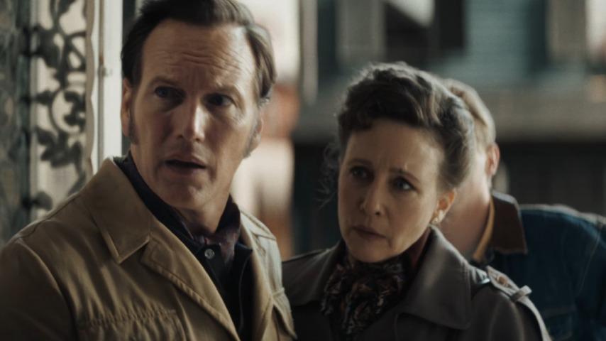

Well, well, well. The Warrens are back — for one last exorcism, séance, or whatever spiritual showdown they haven’t done yet. The Conjuring: Last Rites is allegedly the “final chapter,” which sounds dramatic enough until you remember this franchise has spun off more times than a haunted fidget spinner.
The title alone? Last Rites. Sounds holy. Sounds final. Sounds like it should’ve come two movies ago. Let’s be honest — we’re all here because the first Conjuring films slapped. They had grit. They had mood. They had Patrick Wilson being hot in a dad-with-a-crucifix kind of way. But after the courtroom detour in The Devil Made Me Do It, expectations dropped faster than a possessed nun from a bell tower. And then came the teaser. Cue the creepy child whispering nursery rhymes, a church bathed in shadowy candlelight, and Lorraine looking like she’s about to slap a demon with her Bible clutch. It’s all very classic Conjuring, except now there’s CGI fog that looks like it came from a 2012 PowerPoint animation. The vibe? Nostalgic… with a side of pixelated poltergeist.
This movie is trying to recapture that old-school terror — creaking floorboards, demonic reflections, and the kind of haunted-house tension that made you sleep with the lights on in 2013. And honestly? Respect. But at the same time, there’s this faint stench of franchise fatigue wafting through the holy water. Like yes, we love Ed and Lorraine, but do they even want to be here anymore? Still, it’s hard not to feel a little sentimental. It’s been over a decade of jump scares, possession scenes, and Vera Farmiga’s divine wardrobe. If this really is the final curtain call, then fine — let the ghosts scream, the crosses flip, and the demons throw one last tantrum. Just please, for the love of all things sacred, keep the CGI to a minimum.
👻 Final Take:
The Conjuring: Last Rites is serving “nostalgic horror comeback” with a dash of digital chaos. Whether it slays or strays will depend on whether it leans into what made the franchise iconic — or just becomes another ghost story buried under visual effects.
Are we watching? Obviously.
Are we nervous? A little.
But if this really is the Warrens’ last ride… then buckle up, bless your screen, and prepare for holy chaos.